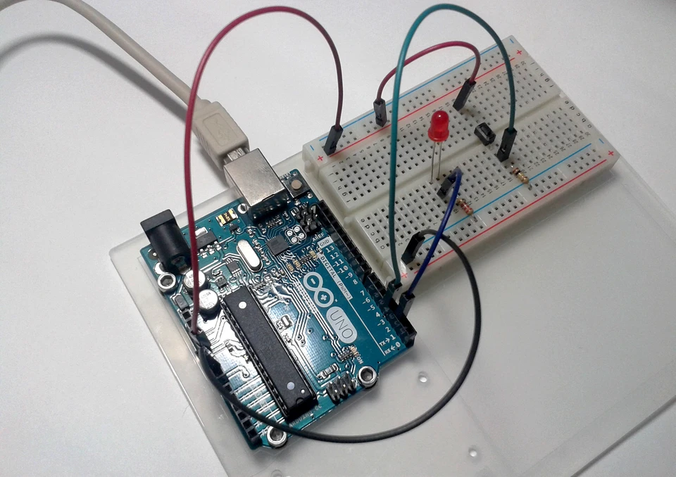
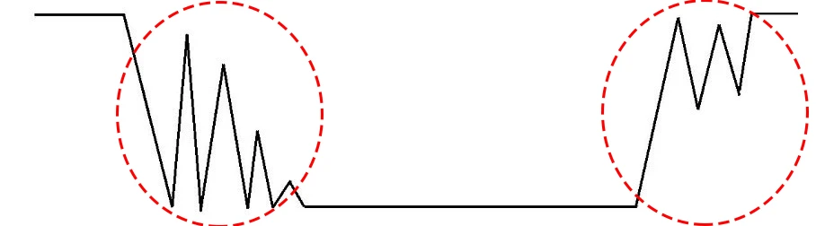

Boton e Interruptor
En este post, haremos una extensión del anterior. Nos detendremos en uno de los elementos más básicos en el control de Arduino, pero de los más usados y prácticos, los botones . Éstos son un tipo de elemento externo que nos permite controlar físicamente acciones a realizar por nuestro sistema a través de dar continuidad o no a la señal de entrada en la que están instalados. Como podréis imaginar son parte fundamental de casi cualquier proyecto y son muy fáciles de usar y programar, aunque hay que tener en cuenta un par de detalles a la hora de usarlos. Para comprender bien cómo funcionan en los distintos casos y cómo solucionar algunos problemillas propios de los botones, realizaremos 3 ejemplos para verlos detalladamente y en los que usaremos el mismo circuito/esquema y solo iremos variando su programación.
Esquema común
Para realizar todos los ejemplos necesitaremos los siguientes elementos:
- 1 x Arduino UNO R3
- 1 X Protoboard
- 1 x led (usaremos rojo pero vale cualquier color)
- 1 x Botón
- 1x Resistencia de 220Ω (puede valer de 330Ω)
- 1 x Resistencia de 10kΩ (puede valer de 1 ó 5 kΩ)
- Cables para conectar todo
Con todo comenzaremos a montar nuestro circuito como se describe en el siguiente esquema.
 Ilustración 1 Esquema de montaje del interruptor.
Ilustración 1 Esquema de montaje del interruptor.
Usaremos el pin 2 para encender el led y el 4 para saber el estado del botón. Al montarlo debemos tener en cuenta un par de detalles. Primero, que conectemos correctamente la polaridad del led, siguiendo las indicaciones que os dimos en el ejemplo del semáforo. Segundo, que usemos la resistencia de 10kΩ para conectar el botón a tierra . Esto es muy importante, ya que con eso protegemos a nuestra placa de crear un cortocircuito a tierra que podría deteriorarla. La resistencia de 220Ω, como en ejemplos anteriores, la usaremos para conectar el led a tierra.
 Ilustración 2 Montaje real para ejemplos de botones e interruptores
Pulsador
Empezaremos con el botón más sencillo de programar y usar que tenemos, el pulsador . Éste nos permite realizar una acción mientras mantengamos pulsado nuestro botón, por ejemplo que un led se quede encendido mientras estemos pulsando. Para nuestro programa declararemos una variable llamada “ pulsador ” que usaremos para saber si nuestro botón está pulsado o no.
int pulsador=0;
Dentro del setup, configuraremos el pin digital 2 como salida para poder dar la orden de encender o apagar.
pinMode(2, OUTPUT);
Para que podamos saber en qué estado se encuentra nuestro botón configuraremos el pin digital 4 como entrada .
pinMode(4, INPUT);
Finalmente nuestro código loop lo que hará será, primero leer del pin 4 en qué estado está el botón mediante la sentencia digitalRead. Este valor lo almacenaremos en la variable “pulsador” que declaramos anteriormente.
pulsador = digitalRead(4);
Una vez que sepa cómo se encuentra el botón, mediante una función “if”, si el pulsador está HIGH (pulsado) encenderá el led y si el pulsador está en LOW (sin pulsar) lo apagará.
if(pulsador==HIGH) {
digitalWrite(2, HIGH);
}
else{
digitalWrite(2, LOW);
El código completo quedaría así:
/**************************/
/* Encender LED con Botón */
/* Pulsador */
/**************************/
/*** Fernando Martinez Mendoza ***/
//** Definiciones **//
int pulsador=0; //almacena el estado del botón
//** Programa **//
void setup() {
pinMode(2, OUTPUT); //declaramos el pin 2 como salida
pinMode(4, INPUT); //declaramos el pin 4 como entrada
}
void loop() {
pulsador = digitalRead(4); //lee el estado del botón
if(pulsador==HIGH) { //si el estado es pulsado
digitalWrite(2, HIGH); //se enciende el led
}
else{ //si el estado es no pulsado
digitalWrite(2, LOW); //se apaga el led
}
}
Interruptor
Con este tipo, podremos usar un botón de la misma manera que si usáramos un interruptor de los que conocemos comúnmente. Cuando pulsemos, se realizará la acción programada (encender el led) y se mantendrá en este estado hasta que volvamos a pulsar nuevamente (se apagará el led). Para obtener este tipo de botón solo haremos una pequeña modificación del código anterior. Introduciremos una nueva variable llamada “ estado ” que almacene el estado en el que se dejó el led tras la última pulsación. De esta forma cuando pulsemos, Arduino se acordará si el led estaba encendido o apagado.
int estado=0;
Usaremos esta “memoria” de Arduino para alternar entre encendido y apagado cada vez que pulsemos. Esto lo haremos modificando el código en la zona de void loop(). Primero introducimos un “if” que hará que cuando pulsemos el botón alterne el valor de la variable estado entre 0 y 1.
if(pulsador==HIGH){
estado=1-estado;
}
La expresión “estado=1-estado” lo que hace es que si el estado era apagado, igual a 0, al pulsar almacenará en la variable el valor 1-0 =1 y si el estado era encendido, igual a 1, al pulsar almacenará 1-1=0. Después, en vez de comprobar cómo está la variable “pulsador”, como hacíamos antes, lo que comprobamos es el valor que tiene la variable “estado”. Si es 1 encenderá el led y si es 0 lo apagará.
if(estado==1) {
digitalWrite(2, HIGH);
}
else{
digitalWrite(2, LOW);
Os dejamos el código completo para que solo tengáis que copiar y pegar en el IDE.
/**************************/
/* Encender LED con Botón */
/* Interruptor 1 */
/**************************/
/*** Fernando Martinez Mendoza ***/
//** Definiciones **//
int pulsador=0; //almacena el estado del botón
int estado=0; //0=led apagado, 1=led encendido
//** Programa **//
void setup() {
pinMode(2, OUTPUT); //declaramos el pin 2 como salida
pinMode(4, INPUT); //declaramos el pin 4 como entrada
}
void loop() {
pulsador = digitalRead(4); //lee si el botón está pulsado
if(pulsador==HIGH){ //si el boton es pulsado
estado=1-estado;
}
if(estado==1) { //si el estado es 1
digitalWrite(2, HIGH); //se enciende el led
}
else{ //si el estado es 0
digitalWrite(2, LOW); //se apaga el led
}
}
Interruptor con corrección de rebote
Al realizar el anterior ejemplo de interruptor, podréis daros cuenta que hay algunas veces que nuestro botón falla y no hace correctamente su función. Es imposible predecir su comportamiento. A este efecto se le denomina rebote y es debido a varios motivos. Aquí vamos a dar un par de soluciones rápidas y efectivas que nos pueden ayudar en la mayoría de casos, pero en el módulo de nivel intermedio explicaremos una solución al problema del “ debounce ” más elaborada y fiable. Uno de los motivos de este efecto, es que Arduino repite nuestro loop de instrucciones miles de veces cada segundo. Esto provoca que cuando pulsamos el botón una sola vez, Arduino leerá cientos de veces seguidas que hemos pulsado e interpretará que hemos pulsado todas esas veces. Por eso, la acción de encender y apagar se repetirá muy rápidamente, sin que lo apreciemos, hasta dejar el led en la última posición leída. Solucionar esto es sencillo. Solo tenemos que introducir una nueva variable “ pulsadorAnt ” donde almacenemos en qué estado anterior se encontraba el botón, pulsado o no, antes de nuestra pulsación.
int pulsadorAnt=0;
Seguidamente, en nuestro loop, modificaremos el primer “if” que teníamos introduciendo una segunda condición. Diremos que para que Arduino cambie la posición del interruptor, no solo debe leer que el botón está pulsado, “pulsador==HIGH”, sino que también debe cumplirse que justo en el instante antes no estuviese pulsado, “pulsadorAnt==LOW”. De esta forma Arduino solo leerá nuestra pulsación una sola vez cada vez que pulsemos.
if((pulsador==HIGH)&&(pulsadorAnt==LOW)){
estado=1-estado;
}
Para finalizar, justo después de este “if”, actualizaremos el valor de la variable “pulsadorAnt” con el nuevo valor de “pulsador” mediante la siguiente línea.
pulsadorAnt=pulsador;
Si cargásemos ya este nuevo código a la placa, veríamos que nuestro problema se ha solucionado casi del todo, pero que aún, algunas veces, falla su funcionamiento. Esto es debido a la propia construcción del botón. Un botón, internamente, no es más que dos láminas metálicas que se unen o separan por la acción de un resorte. En el momento de la unión, o separación, de las láminas, el resorte provoca una serie de rebotes entre las láminas que Arduino es capaz de detectar.

Ilustración 3 Gráfico del efecto rebote en el apagado y encendido de un botón.
Para evitar este problema, una solución sencilla es meter una pequeñísima pausa al programa justo después de que Arduino detecte nuestra pulsación. De esta forma, cuando el código retome su funcionamiento, los rebotes habrán terminado y no serán detectados. En nuestro caso introduciremos una pausa de 40 milisegundos, aunque podéis probar a variar este valor a vuestro gusto para afinar el resultado.
delay(40);
Podréis observar que aún falla alguna vez pero que su funcionamiento es bastante más preciso que antes. Esto es todo. Esperamos que se haya entendido bien y que no quede muy lioso. Al seguir los pasos veréis que es muy fácil y divertido. Os dejamos el código completo.
/**************************/
/* Encender LED con Botón */
/* Interruptor sin rebote */
/**************************/
/*** Fernando Martinez Mendoza ***/
//** Definiciones **//
int pulsador=0; //almacena el estado del botón
int estado=0; //0=led apagado, 1=led encendido
int pulsadorAnt=0; //almacena el estado anterior del boton
//** Programa **//
void setup() {
pinMode(2, OUTPUT); //declaramos el pin 2 como salida
pinMode(4, INPUT); //declaramos el pin 4 como entrada
}
void loop() {
pulsador = digitalRead(4); //lee si el botón está pulsado
if((pulsador==HIGH)&&(pulsadorAnt==LOW)){ //si el boton es pulsado y antes no lo estaba
estado=1-estado;
delay(40); //pausa de 40 ms
}
pulsadorAnt=pulsador; //actualiza el nuevo estado del boton
if(estado==1) { //si el estado es 1
digitalWrite(2, HIGH); //se enciende el led
}
else{ //si el estado es 0
digitalWrite(2, LOW); //se apaga el led
}
}